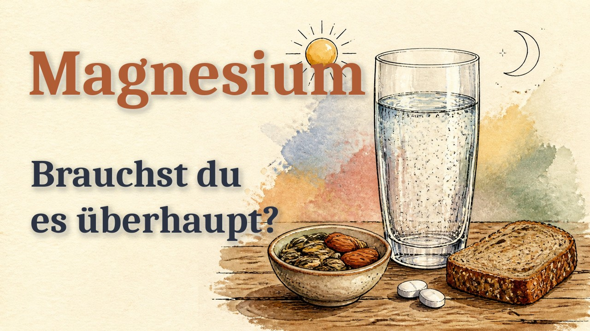

<title>Magnesium-Reihe · Folge 1: Was du wirklich wissen musst · Vorschau</title>
<meta name="claude:viewport-fit-sides" content="cover">
<style>
  /* Eine Spalte, je Fassung eine Karte mit Player; die neueste oben. */
  :root { --grund: #f4f1ec; --karte: #ffffff; --tinte: #1f2430; --grau: #646b75; --linie: #ddd6cc; --akzent: #324e7a;
    --akzent-text: #ffffff; --gut: #2f7d50; --pruefen: #a35a12; --pruefen-grund: #fbebd9; }
  @media (prefers-color-scheme: dark) { :root:not([data-theme="light"]) { --grund: #15181d; --karte: #1e232a; --tinte: #e8eaee;
    --grau: #9aa3ad; --linie: #2f3640; --akzent: #8fb0e3; --akzent-text: #10151c; --gut: #6fcf97; --pruefen: #f0b067;
    --pruefen-grund: #3a2a17; color-scheme: dark } }
  :root[data-theme="dark"] { --grund: #15181d; --karte: #1e232a; --tinte: #e8eaee; --grau: #9aa3ad; --linie: #2f3640;
    --akzent: #8fb0e3; --akzent-text: #10151c; --gut: #6fcf97; --pruefen: #f0b067; --pruefen-grund: #3a2a17; color-scheme: dark }
  * { box-sizing: border-box; }
  body { background: var(--grund); color: var(--tinte); font: 16px/1.5 system-ui, -apple-system, "Segoe UI", sans-serif; }
  main { max-width: 760px; margin: 0 auto; display: grid; gap: 18px; padding-block: 24px 48px;
    padding-left: max(16px, env(safe-area-inset-left, 0px)); padding-right: max(16px, env(safe-area-inset-right, 0px)); }
  h1 { margin: 0; font: 700 clamp(24px, 6vw, 34px)/1.15 Georgia, "Times New Roman", serif; text-wrap: balance; }
  .aufgabe { margin: 0; padding: 12px 14px; border-left: 4px solid var(--pruefen); background: var(--pruefen-grund); border-radius: 6px; }
  .video { display: grid; gap: 8px; padding: 14px; background: var(--karte); border: 1px solid var(--linie); border-radius: 14px; }
  .kopfzeile { display: flex; flex-wrap: wrap; align-items: baseline; gap: 6px 10px; }
  .video h2 { margin: 0; font: 650 19px/1.3 system-ui, sans-serif; }
  .marke { font: 600 12px/1 system-ui, sans-serif; letter-spacing: .05em; text-transform: uppercase; padding: 4px 8px; border-radius: 6px; }
  .marke.pruefen { background: var(--pruefen-grund); color: var(--pruefen); }
  .marke.info { background: var(--linie); color: var(--grau); }
  .stand, .notiz { margin: 0; font-size: 14px; color: var(--grau); }
  video { width: 100%; max-width: 100%; aspect-ratio: 16 / 9; background: #000; border-radius: 10px; }
  .urteil { display: flex; gap: 8px; }
  .urteil button, .senden { border: 1px solid var(--linie); background: none; color: var(--tinte); border-radius: 999px; padding: 9px 16px;
    font: 600 15px/1 system-ui, sans-serif; cursor: pointer; }
  .urteil button[aria-pressed="true"][data-u="passt"] { background: var(--gut); border-color: var(--gut); color: var(--karte); }
  .urteil button[aria-pressed="true"][data-u="aendern"] { background: var(--pruefen); border-color: var(--pruefen); color: var(--karte); }
  .senden { background: var(--akzent); border-color: var(--akzent); color: var(--akzent-text); border-radius: 10px; }
  textarea { width: 100%; font: 16px/1.4 system-ui, sans-serif; color: var(--tinte); background: var(--grund); border: 1px solid var(--linie);
    border-radius: 8px; padding: 8px 10px; resize: vertical; }
  .zeile { display: flex; flex-wrap: wrap; gap: 10px; align-items: center; }
  .melde { font-size: 14px; color: var(--gut); }
  button:focus-visible, textarea:focus-visible { outline: 3px solid var(--akzent); outline-offset: 2px; }
</style>
<main>
  <h1>Magnesium-Reihe · Folge 1: Was du wirklich wissen musst · Vorschau</h1>
  <p class="aufgabe"><b>Deine Aufgabe:</b> Neue Fassung oben (16.11.): Übersicht ohne doppeltes „wem es hilft“, kein doppeltes Bild bei 1:40. Bitte ansehen: „passt“ oder „ändern“. Ton kommt beim Antippen von ▶; nichts wird heruntergeladen.</p>
  <article class="video" id="v1" data-id="v_46f0fe1c36" data-titel="Folge 1 · Endfassung 16.11.">
      <div class="kopfzeile"><h2>Folge 1 · Endfassung 16.11.</h2><span class="marke pruefen">zu prüfen</span></div>
      <p class="stand">Stand 16.11., 16:40 · 13.9 MB</p>
      <video controls playsinline preload="metadata" poster="videos/v_46f0fe1c36.jpg" src="videos/v_46f0fe1c36.mp4"></video>
      <p class="notiz">Übersicht: „In sechs Schritten klären wir: …“. Bei 1:44 Wartezimmer statt des Bildes, das direkt davor schon stand. Sonst wie die Fassung vom 15.11. 6:29.</p>
      <div class="urteil"><button type="button" data-u="passt">✓ passt</button><button type="button" data-u="aendern">ändern</button></div><textarea rows="2" placeholder="Was soll anders werden?" aria-label="Notiz zu Folge 1 · Endfassung 16.11."></textarea><div class="zeile"><button type="button" class="senden">An Claude</button><span class="melde" role="status" aria-live="polite"></span></div>
    </article><article class="video" id="v2" data-id="v_84f03c14db" data-titel="Folge 1 · Endfassung mit Start A">
      <div class="kopfzeile"><h2>Folge 1 · Endfassung mit Start A</h2><span class="marke info">zur Info</span></div>
      <p class="stand">Stand 15.11., 18:50 · 13.9 MB</p>
      <video controls playsinline preload="metadata" poster="videos/v_84f03c14db.jpg" src="videos/v_84f03c14db.mp4"></video>
      <p class="notiz">Start A (deine Wahl), „Eine davon: nie untersucht.“ statt der vorweggenommenen Antwort, Bluttest „für Gesunde wenig hilfreich“, „Kapitel 1 … 6“ oben in jedem Kapitel, Balken unten mit Lücken an den Kapitelgrenzen. 6:30.</p>
      
    </article><article class="video" id="v3" data-id="v_51e788e89e" data-titel="Folge 1 · Umbau">
      <div class="kopfzeile"><h2>Folge 1 · Umbau</h2><span class="marke info">zur Info</span></div>
      <p class="stand">Stand 15.11., 14:40 · 13.3 MB</p>
      <video controls playsinline preload="metadata" poster="videos/v_51e788e89e.jpg" src="videos/v_51e788e89e.mp4"></video>
      <p class="notiz">Neue Reihenfolge nach Nachfrage: Brauchst du es? → Wem es hilft → Wende Wadenkrämpfe → Welche Form? mit Bittersalz-Geschichte → Sicher einnehmen → Essen → Fazit → Karte als offene Fragen. 6:13.</p>
      
    </article><article class="video" id="v4" data-id="v_6213cd610f" data-titel="Folge 1 · Startbild wie Vorschaubild">
      <div class="kopfzeile"><h2>Folge 1 · Startbild wie Vorschaubild</h2><span class="marke info">zur Info</span></div>
      <p class="stand">Stand 15.11., 09:29 · 13.2 MB</p>
      <video controls playsinline preload="metadata" poster="videos/v_6213cd610f.jpg" src="videos/v_6213cd610f.mp4"></video>
      <p class="notiz">Erstes Bild = Vorschaubild („Magnesium“ terrakotta, „Was du wirklich wissen musst“), beim ersten gesprochenen Wort weicht der Untertitel den Fragen. Kein Zierstrich im Startbild, in den Szenen bleibt er. Rest unverändert.</p>
      
    </article><article class="video" id="v5" data-id="v_5064b97446" data-titel="Folge 1 · Endfassung">
      <div class="kopfzeile"><h2>Folge 1 · Endfassung</h2><span class="marke info">zur Info</span></div>
      <p class="stand">Stand 14.11., 22:46 · 13.1 MB</p>
      <video controls playsinline preload="metadata" poster="videos/v_5064b97446.jpg" src="videos/v_5064b97446.mp4"></video>
      <p class="notiz">Erklärvideo, Stil G. Startbild mit den drei Einstiegsfragen, sechs Kacheln, am Ende Fazit „Kurz gesagt“ (greift die Einstiegsfragen auf), Karte der Reihe und Brückensatz zu Folge 2. Ohne Kommentarfrage (deine Wahl). Titel und Vorschaubild jetzt „Was du wirklich wissen musst“ (deine Wahl 14.11.).</p>
      
    </article>
</main><section style="margin:24px auto;max-width:900px;padding:0 16px">
<h2 style="font:700 22px Georgia,serif">YouTube: Vorschaubild und Beschreibung</h2>

<p><button type="button" id="kopier" style="font:inherit;font-weight:600;padding:12px 16px;border-radius:10px;min-height:48px">Beschreibung kopieren</button> <span id="kopiert"></span></p>
<textarea id="beschr" rows="18" readonly style="width:100%;font:15px/1.4 system-ui,sans-serif;padding:10px;border-radius:10px">Magnesium: Was du wirklich wissen musst
Folge 1 der Magnesium-Reihe: ob du Magnesium überhaupt brauchst, wem es hilft und wem nicht, welche Form taugt, wie du es sicher einnimmst und was im Essen steckt.

Kapitel
0:00 Einleitung
0:29 Brauchst du es überhaupt?
1:39 Wem es hilft
2:27 Wo es nicht hilft
3:12 Welche Form?
4:11 Sicher einnehmen
4:59 Aus dem Essen
5:32 Fazit
5:56 Die Reihe

Quellen (Nummern wie im Video)
[1] MRI 2008 (NVS II): https://www.mri.bund.de/fileadmin/MRI/Institute/EV/NVSII_Abschlussbericht_Teil_2.pdf
[2] DGE 2022: https://www.dge.de/fileadmin/dok/gesunde-ernaehrung/faq/DGE-FAQ-Magnesium-2022.pdf
[3] DGE 2021: https://www.dge.de/wissenschaft/referenzwerte/magnesium/
[4] Ahmed 2019: https://doi.org/10.3390/medsci7040056
[5] Liamis 2021: https://doi.org/10.1002/prp2.829
[6] Srinutta 2019: https://doi.org/10.1097/md.0000000000017788
[7] Jahnen-Dechent 2012: https://doi.org/10.1093/ndtplus/sfr163
[8] Rosanoff 2022: https://doi.org/10.1007/s00394-022-02916-w
[9] de Baaij 2022: https://doi.org/10.1007/s00394-022-03004-9
[10] Gebrauchsinformation Magnesium Verla 2022: https://patienteninfo-service.de/gi/7130/pdf
[11] de Baaij 2015: https://doi.org/10.1152/physrev.00012.2014
[12] Argeros 2025: https://doi.org/10.1161/HYPERTENSIONAHA.125.25129
[13] DGN 2025: https://www.dgn.org/cms-content/030057_LL_Migra%CC%88ne_2025_V7_1757058404145.pdf
[14] Magpie 2002: https://doi.org/10.1016/s0140-6736(02)08778-0
[15] Garrison 2020: https://doi.org/10.1002/14651858.CD009402.pub3
[16] Mah 2021: https://doi.org/10.1186/s12906-021-03297-z
[17] Schuster 2025: https://doi.org/10.2147/NSS.S524348
[18] Boyle 2017: https://doi.org/10.3390/nu9050429
[19] EFSA 2009: https://doi.org/10.2903/j.efsa.2009.1216
[20] Fuller 1662: https://distantreader.org/stacks/earlyprint/txt/A40672.txt
[21] Black 1756: https://www.gutenberg.org/ebooks/24591
[22] Davy 1808: https://doi.org/10.1098/rstl.1808.0023
[23] Gebrauchsinformation Bittersalz 2025: https://cdn.shop-apotheke.com/PDF/D01/569/860/D01569860-bp.pdf
[24] Kappeler 2017: https://doi.org/10.1186/s40795-016-0121-3
[25] Pardo 2021: https://doi.org/10.1016/j.nut.2021.111294
[26] Schuette 1994: https://doi.org/10.1177/0148607194018005430
[27] Pajuelo 2024: https://doi.org/10.3390/nu16244367
[28] BfR 2021: https://www.bfr.bund.de/cm/343/hoechstmengenvorschlaege-fuer-magnesium-in-lebensmitteln-inklusive-nahrungsergaenzungsmitteln.pdf
[29] SCF 2001: https://ec.europa.eu/food/fs/sc/scf/out105_en.pdf
[30] Fachinformation 2016: https://fachinfo.de/pdf/011345
[31] Fine 1991: https://doi.org/10.1172/JCI115317
[32] eigene Suche 2026: https://pubmed.ncbi.nlm.nih.gov/
[33] MRI 2025 (BLS 4.0): https://doi.org/10.25826/Data20251217-134202-0
[34] Min/TafelWV: https://www.gesetze-im-internet.de/min_tafelwv/anlage_6.html

Unabhängig: keine Sponsoren, keine Affiliate-Links, keine eigenen Produkte. Recherche-Stand: November 2026. Sprecherstimme synthetisch (ElevenLabs). Bilder KI-generiert. Das Video ersetzt nicht das Gespräch mit Arzt oder Ärztin.
</textarea>
</section>
<script>
(function () {
  var TITEL = "Magnesium-Reihe · Folge 1: Was du wirklich wissen musst", db = null, kom = null, anClaude = false, urteil = {};
  document.querySelectorAll("video").forEach(function (v) { v.addEventListener("play", function () {
    document.querySelectorAll("video").forEach(function (w) { if (w !== v) w.pause(); }); v.muted = false; }); });
  document.querySelectorAll(".video").forEach(function (k) {
    var id = k.dataset.id, ta = k.querySelector("textarea"), melde = k.querySelector(".melde");
    k.querySelectorAll(".urteil button").forEach(function (b) { b.addEventListener("click", function () {
      urteil[id] = b.dataset.u; k.querySelectorAll(".urteil button").forEach(function (x) { x.setAttribute("aria-pressed", String(x === b)); });
      if (b.dataset.u === "aendern" && ta) ta.focus();
      if (db) db.collection("vorschau_urteile").doc(id).set({ video: k.dataset.titel, urteil: b.dataset.u, notiz: ta ? ta.value.trim() : "", zeit: new Date().toISOString() }).catch(function () {});
    }); });
    var s = k.querySelector(".senden"); if (!s) return;
    s.addEventListener("click", function () {
      var text = "Vorschau " + TITEL + ": " + k.dataset.titel + " – " + ({ passt: "PASST", aendern: "ÄNDERN" }[urteil[id]] || "ohne Urteil") + (ta.value.trim() ? "\nNotiz: " + ta.value.trim() : "");
      if (db) db.collection("vorschau_urteile").doc(id).set({ video: k.dataset.titel, urteil: urteil[id] || null, notiz: ta.value.trim(), zeit: new Date().toISOString() }).catch(function () {});
      if (!kom || !anClaude) { melde.textContent = db ? "Gespeichert. Claude liest es beim nächsten Mal." : "Bitte Claude im Chat Bescheid geben."; return; }
      s.disabled = true;
      kom.anchorFor(k).then(function (a) { return kom.sendToClaude({ anchor: a, text: text.slice(0, 3900) }); })
        .then(function () { melde.textContent = "An Claude geschickt ✓"; }, function (e) { melde.textContent = e && e.code === "consent_required" ? "Gespeichert. Zum Senden bitte die Freigabe erlauben." : "Gespeichert, Senden fehlgeschlagen."; })
        .then(function () { s.disabled = false; });
    });
  });
  if (window.claude && claude.use) {
    claude.use("db").then(function (d) { if (d) db = d; }).catch(function () {});
    claude.use("comments").then(function (c) { if (!c || !c.canSendToClaude) return; kom = c;
      c.canSendToClaude().then(function (v) { anClaude = v === "available"; }, function () {}); }).catch(function () {});
  }
})();
</script>

<script>document.getElementById("kopier").addEventListener("click",function(){navigator.clipboard.writeText(document.getElementById("beschr").value).then(function(){document.getElementById("kopiert").textContent="Kopiert.";},function(){document.getElementById("kopiert").textContent="Kopieren ging nicht, bitte im Feld markieren.";});});</script>
